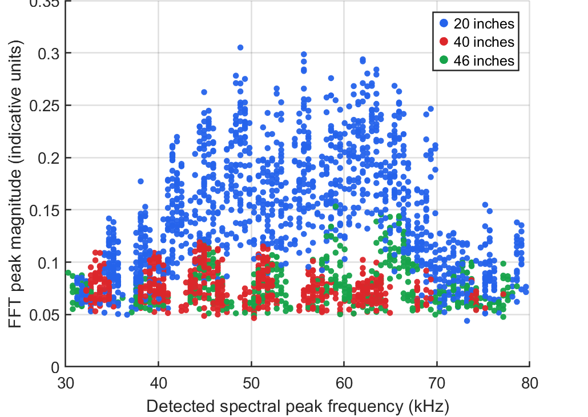
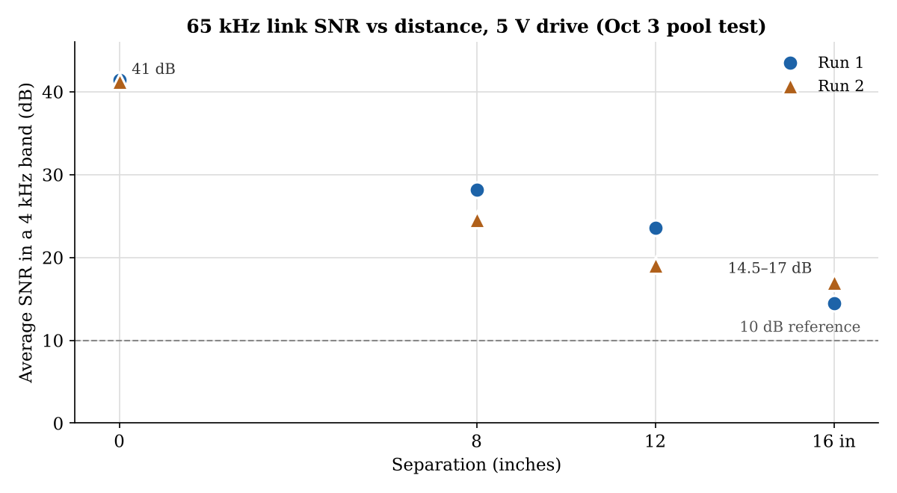
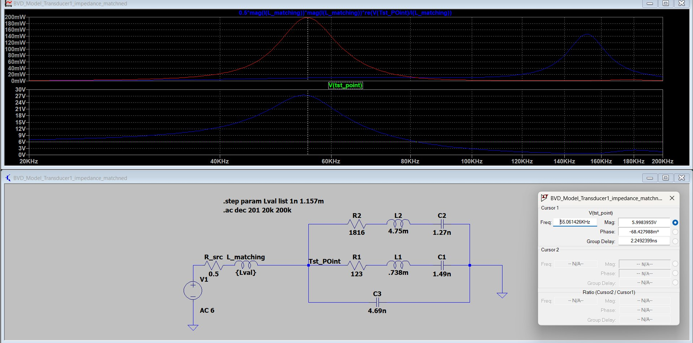

- Link range
- ~15 m
- Resonance
- ~149 kHz, axial mode
- Carrier
- Near 55 kHz
- Usable band
- ~45–60 kHz
- Model fit
- 3% RMS, peeled; 1.7% refined
- Modulation
- Frequency-hopped FSK
- Drive matching
- Series 1.16 mH, ~21× power
Where the modem is now
- Transducer characterization done
- System requirements done
- Hardware: Tx/Rx circuits now
- Channel modelling next
- PCB design later
- Firmware later
- System test later
Ringing at 149 kHz
Ran a 20–200 kHz sweep at 9 separations and processed it with MATLAB FFT peak-finding. The strongest response was near 149 kHz, not the 65 kHz radial mode on the spec sheet, and a hand calculation matched it to the transducers’ length (axial) mode.
A second resonance near 55 kHz
The pool tests also showed a resonance near 55 kHz, and the modem now runs close to it. To pick the exact carrier, I suggested sending FSK bits at 50, 55, 60 and 65 kHz and keeping the frequency with the fewest bit errors.
The usable band
Rather than staying at the 65 kHz spec value, I argued for testing carriers in the pool. The team’s later sweeps peaked near 51 kHz and stayed fairly flat from about 45 to 60 kHz, which confirmed the band we can use.
On October 17, ran a gated-pulse sweep (0.5 ms bursts, 300 steps from 30–80 kHz) with one Analog Discovery transmitting and one recording, at separations of 20, 40 and 46 inches, about 1.5 ft from the pool wall. The aim is to pick the best carrier frequency, bandwidth and link budget.

Hopping between two tone pairs
The modem now uses frequency-hopped FSK near 55 kHz. One symbol uses 54 kHz for a 0 and 57 kHz for a 1, the next uses 55 kHz and 61 kHz, and the two sets alternate. That way, echoes of one symbol arrive while the receiver is listening on the other pair.
The PWM frequency of the Arctos ESC, which was 60 kHz, has also been changed.
Circuit models of the transducers
Recorded underwater impedance sweeps of both potted transducers and fitted Butterworth–Van Dyke (BVD) circuit models. A single branch missed Transducer 1 by 18% RMS; peeling out a second branch near 65 kHz brought it to 3.0%, and a least-squares refinement to 1.7%. How the peeling works.

Pool testing
Helped run pool testing at NREF: impedance, Tx/Rx sensitivity and reciprocity, ring-down, and chirp matched-filter channel sounding. At 5 V drive the average SNR went from about 41 dB at 0 inches to 14.5–17 dB at 16 inches (41 cm), with the Analog Discovery’s own noise floor as the limit.

Matching the transducer to the driver
At 55 kHz the transducer doesn’t look like a resistor. From the measured sweep it’s about 88 Ω in series with −j400 Ω, so it behaves mostly like a capacitor, and a 6 V drive only pushes about 10 mW into it.
An inductor in series adds +j400 Ω and cancels that. The value comes straight from the reactance:
I checked it in LTspice with the two-branch BVD model as the load, a 0.5 Ω source resistance standing in for the amplifier, and the inductor stepped between almost nothing and 1.157 mH. At 6 V the power into the transducer at 55 kHz went from about 10 mW to about 200 mW.

Without the inductor, the transducer takes power most easily at its own main resonance near 150 kHz, which is outside our band. The inductor moves that peak down to the carrier. It isn’t free, though: the transducer now sees about 27 V, the amplifier has to supply about 67 mA, and the gain is narrow, with the 45 and 65 kHz band edges a few dB below the peak.
For the part, I picked a Bourns SRR1260A-102K (1.0 mH). On its own it puts the peak near 60 kHz, so the team is deciding between adding about 150 µH to stay at 55 kHz or moving the carrier up to around 60 kHz.
Now: the transmit chain
Built a 2-FSK modem simulation in MATLAB to estimate bit errors under noise.
Now on the Tx chain, simulating the Tx and Rx circuits in LTspice around the OPA365 op-amp as the team moves into hardware prototypes. I also suggested reviewing the team’s older modem PCB design and carrying over any changes that would make a real difference.
That older design drives the transducer with a class D amplifier. We found too much noise on the digital side, so the team is looking at adding a 6th-order Sallen–Key high-pass filter. I’ve built the upgraded receive filtering in LTspice, but we don’t have the hardware for it yet.